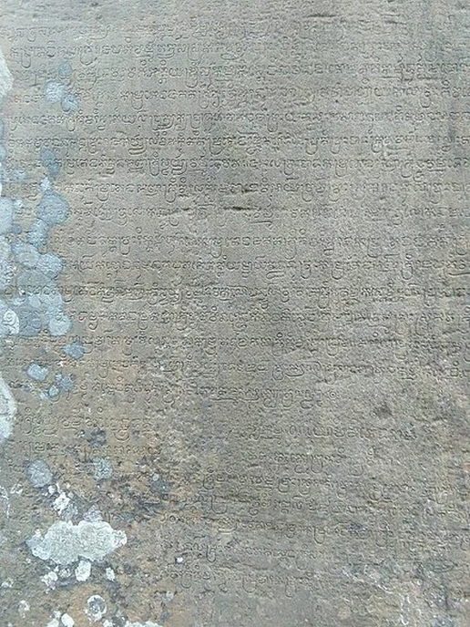
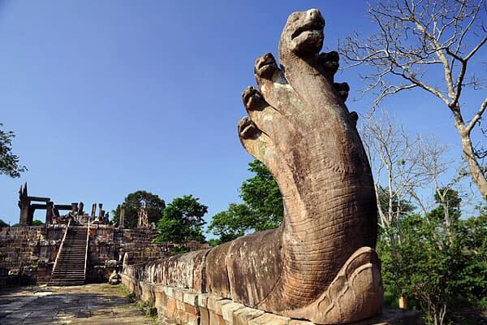
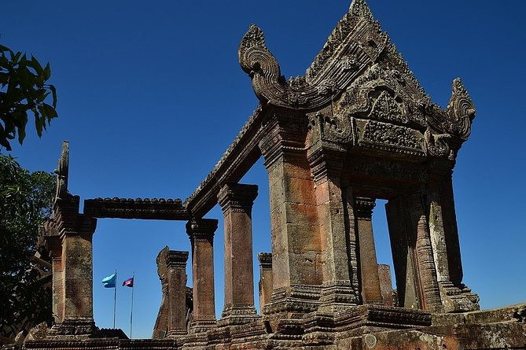
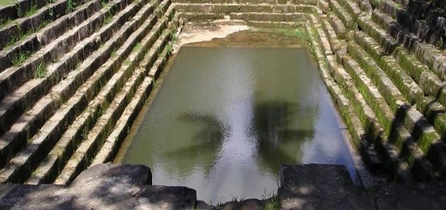
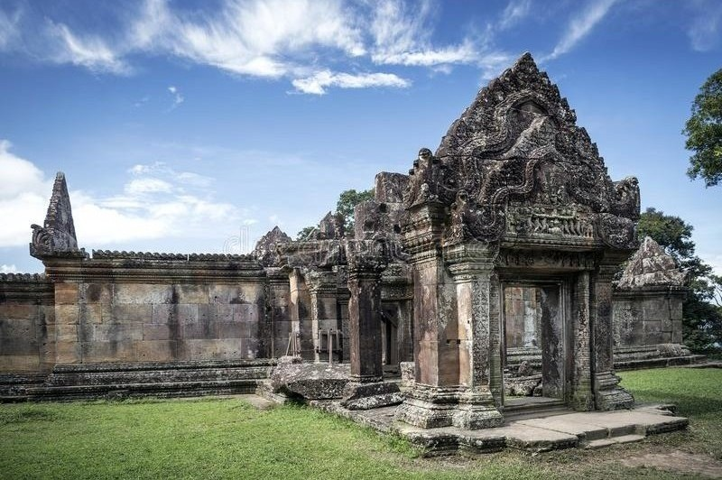

ប្រាសាទព្រះវិហារ ស្ថិតនៅភាគខាងជើងនៃប្រទេសកម្ពុជាក្នុងភូមិសាស្ត្រ ភូមិធម្មជាតិ ឃុំស្រអែម ស្រុកជាំក្សាន្ត ខេត្តព្រះវិហារ។ប្រាសាទព្រះវិហារជាប្រាសាទភ្នំដែលកសាងនៅលើកំពូលភ្នំព្រះវិហារនៃជួរភ្នំដងរែក ដែលមានរយៈកម្ពស់ ៦២៥ម៉ែត្រ ធៀបទៅនិងទឹកសមុទ្យ។ប្រាសាទព្រះវិហារស្ថិតនៅជាប់នឹងព្រំប្រទល់ខេត្តស៊ីសាកេត នៃប្រទេសថៃ។ ប្រាសាទព្រះវិហារមានចម្ងាយប្រមាណ ៥៥គីឡូម៉ែត្រពីសាលាស្រុកជាំក្សាន្ត ១០០គីឡូម៉ែត្រពីទីរួមខេត្តព្រះវិហារ ជាង ១៥០គីឡូម៉ែត្រពីទីរួម ខេត្តសៀមរាប និងចម្ងាយប្រមាណ ៤០០គីឡូម៉ែត្រពី រាជធានីភ្នំពេញ ។ ជួរភ្នំដងរែកជាខណ្ឌសីមាព្រំប្រទល់ធម្មជាតិអន្តរជាតិរវាងប្រទេសកម្ពុជា និងប្រទេសថៃ។ ប្រាសាទព្រះវិហារស្ថិតនៅលើចំណុចខ្សែស្រប១៤.២៤ ទៅ១៨នៃរយៈទទឹងខាងកើត និងចំណុចខ្សែស្រប១០៤ ទៅ៤១.០២នៃរយៈបណ្តោយខាងជើង។ ប្រាសាទព្រះវិហារមានទីតាំងស្ថិតនៅលើខ្នងភ្នំព្រះវិហារ ស្ថិតនៅលើផ្ទៃដីទំហំ៨០០ គុណនឹង ៤០០ ម៉ែត្រការ៉េ។ ភ្នំប្រាសាទព្រះវិហារនេះមានលក្ខណៈចោទខ្លាំងពីខាងប្រទេសកម្ពុជា និងជម្រាលពីខាងប្រទេសថៃ។ សព្វថ្ងៃនេះអ្នកលក់ដូរ និងប្រជាជនតំបន់នោះភាគច្រើនតែងតែឡើងទៅលើភ្នំតាមផ្លូវស៊ី១ ពីព្រោះថាផ្លូវនោះវាងាយស្រួលក្នុងការធ្វើដំណើរ។ ម្យ៉ាងទៀតអ្នកទេសចរអាចឡើងភ្នំព្រះវិហារតាមរយៈជណ្តើរបុរាណនៅផ្នែកខាងកើតនៃភ្នំ ដែលត្រូវបានកសាងតាំងពីសម័យជាមួយប្រាសាទមកម្លេះ តែត្រូវបានខូចខាតយ៉ាខ្លាំង តែនៅពេលបច្ចុប្បន្នមានការជួសជុលនិងយកឈើធ្វើជាជណ្តើរជំនួសវិញក្រោមការជួសជុលរបស់ អាជ្ញាធរជាតិព្រះវិហារ។ ក្នុងការធ្វើដំណើរទៅកាន់ប្រាសាទព្រះវិហារគេអាចជ្រើសរើសតាមរយៈផ្លូវពីរគឺ៖ ចេញពី ខេត្តសៀមរាបតាមផ្លូវទៅកាន់ ប្រាសាទបន្ទាយស្រី ឆ្ពោះទៅកាន់ ស្រុកអន្លង់វែង រហូតមកដល់វង្វង់មូលស្រអែម រួចបន្តដំណើរប្រហែល ២០គីឡូម៉ែត្រទៀត និងដល់ចំណតគ១ ដែលជាកន្លែងលក់សំបុត្រឡើងប្រាសាទព្រះវិហារ។ ចេញដំណើរពី រាជធានីភ្នំពេញ ទៅ ខេត្តកំពង់ធំ បន្ទាប់មកដល់ថ្នល់បំបែកសៀមរាប-ព្រះវិហារ រួចបត់ស្តាំកាត់តាម រមណីយដ្ឋានសំបូរព្រៃគុក ឬប្រាសាទសំបូរព្រៃគុក រហូតដល់ផ្លូវបំបែកភ្នំដែករួចបត់ឆ្វេងមកទីរួម ខេត្តព្រះវិហារ ហើយបន្តដំណើររហូតដល់វង្វង់មូលស្រអែម។
ក្រុមអ្នកបុរាណវិទ្យាតែងបានគិតថា ជាប្រាសាទដែលមានរបៀបសង់សឹងតែដូចៗគ្នាទៅនឹងសំណង់ដទៃទៀតដែលសិ្ថតក្នុងស្ថាបត្យកម្មរបស់ស្ថេចសូរ្យវរ្មម៌ទី១ គឺបែបប្រាសាទសណ្តូកលើភ្នំ ចាំងច្រិតថ្មភ្នំសាងជាប្រាសាទ ដូចគ្នាទៅនឹងប្រាសាទវត្តភូ ប្រាសាទភ្នំជីសូរ ប្រាសាទជើងព្រៃ ប្រាសាទវត្តត្រាច....ជាដើម។ល។ រីចម្លាក់នៅលើហោរជាងមានទំរង់ដូចនៅប្រាសាទបន្ទាយស្រី និង កោះកេរ ដូច្នោះដែរ។
ការសិក្សាស្រាវជ្រាវប្រៀបធៀបប្រដូចចម្លាក់រចនាបថ សិល្បៈខ្មែរ ដើម្បីស្វែងយល់ស្គាល់អំពីការវិវត្តិរបស់វប្បធម៌ខ្មែរ និងអរិយធម៌ខ្មែរអាចជាកត្តាមួយដើម្បីធ្វើឱ្យយើងមានមោទភាពក្រៃលែងចំពោះការប៉ិបប្រសប់ ចំណេះដឹងដ៏ខ្ពង់ខ្ពស់ និងភាពឧស្សាណ៍ព្យាយាម តស៊ូរបស់ដូនតាយើង។ ប្រាសាទព្រះវិហារមិនគ្រាន់តែជាមោទភាពក្នុងផ្នែកសិល្បៈវប្បធម៌ប៉ុណ្ណោះទេ ប្រាសាទព្រះវិហារជាមោទភាពដល់ធំធេង ឧត្តុងឧត្តមរបស់ខ្មែរក្នុងវិស័យទ្រឹស្តី គំនិត បញ្ញាញាណ នយោបាយ សេដ្ឋកិច្ច កសិកម្ម យោធា គ្រប់គ្រង និងប្រវត្តិសាស្រ្ត។ល។ ប្រាសាទព្រះវិហារជាសក្ខីភាពនៃមហាអំណាចរបស់ខ្មែរជាសក្ខីភាពនៃការគ្រប់គ្រងនយោបាយដ៏ល្អប្រសើរមួយ ដែលមានទ្រឹស្តីពិតប្រាកដនិយម មានចក្ខុវិស័យល្អខ្ពង់ខ្ពស់ ចេះកសាងស្ថាបនាជាតិតាមផ្លូវល្អប្រសើរ ប្រត្យកនិយម និងជាសក្ខីភាពនៃសេចក្តីអង់អាចក្លាហាន ពូកែរបស់ខ្មែរចេះបន្តវេណគ្នាឱ្យមានចីរភាព។ កត្តានេះហើយដែលធ្វើឱ្យប្រទេសខ្មែរមានទឹកដីដល់ធំទូលាយក្លាយជាអាណាចក្រមួយយ៉ាងធំនៅអាស៊ីអាគ្នេយ៍។ ក្រុមអ្នកបុរាណវិទ្យាតែងបានគិតថា ជាប្រាសាទដែលមានរបៀបសង់សឹងតែដូចៗគ្នាទៅនឹងសំណង់ដទៃទៀតដែលសិ្ថតក្នុងស្ថាបត្យកម្មរបស់ស្ថេចសូរ្យវរ្មម៌ទី១ គឺបែបប្រាសាទសណ្តូកលើភ្នំ ចាំងច្រិតថ្មភ្នំសាងជាប្រាសាទ ដូចគ្នាទៅនឹងប្រាសាទវត្តភូ ប្រាសាទភ្នំជីសូរ ប្រាសាទជើងព្រៃ ប្រាសាទវត្តត្រាច....ជាដើម។ល។ រីចម្លាក់នៅលើហោរជាងមានទំរង់ដូចនៅប្រាសាទបន្ទាយស្រី និង កោះកេរ ដូច្នោះដែរ ។តាមរយៈការសិក្សាស្រាវជ្រាវអាចសន្មតថា សំណង់ប្រាសាទព្រះវិហារត្រូវបានចាប់ផ្តើមកសាងឡើងដំបូងនៅដើមសតវត្សទី៩ ក្នុងរជ្ជកាលព្រះបាទជ័យវរ្ម័នទី២ (៨០២-៨៥០)។ តាមរយៈសិលាចារឹកលេខ K-៥៨៣ នៅប្រាសាទបាពួន ចារក្នុងរជ្ជកាលព្រះបាទរាជេន្ទ្រវរ្ម័នទី២ (៨៤៤-៩៦៨) និយាយថាព្រះអម្ចាស់ឥន្រ្ទាយុទ្ធជាព្រះបុត្រារបស់ព្រះបាទជ័យវរ្ម័នទី២ បានទៅធ្វើតបៈនៅភ្នំលិង្គបព៌ត(ប្រាសាទវត្តភូចំប៉ាសាក់ប្រទេសឡាវ) ហើយបាននាំយកលិង្គព្រះឥសូរពីថ្មលិង្គភ្នំធម្មជាតិ (ស្វយម្ភូលិង្គ) មកតម្កល់នៅលើភ្នំព្រះវិហារក្នុងព្រះនាមអាទិទេព ព្រះស្រីសិខរីស្វរៈ ដែលមានន័យថាអាទិទេពនៃកំពូលភ្នំ។ ស្រីសិខរីស្វរៈនេះហើយដែលហៅចំពោះលិង្គព្រះឥសូរតម្កល់នៅប្រាសាទព្រះវិហារ និងជាឈ្មោះប្រាសាទព្រះវិហារសម័យបុរាណផង។ ប្រាសាទព្រះវិហារសាងសង់សម្រាប់ឧទ្ទិសចំពោះព្រះឥសូរ ក្នុងសាសនាព្រាហ្មណ៍។
* ព្រះមហាក្សត្រខ្មែរដែលកសាងប្រាសាទព្រះវិហារមានដូចជា៖
. ព្រះអង្គម្ចាស់ឥន្រ្ទាយុទ្ធបុត្រារបស់ព្រះបាទជ័យវរ្ម័នទី២(៨០២-៨៥០)
. ព្រះបាទយសោវរ្ម័នទី១ (៨៨៩-៩០០)
. ព្រះបាទរាជេន្ទ្រវរ្ម័នទី២ (៩៤៤-៩៦៨)
. ព្រះបាទសូរ្យវរ្ម័នទី១ (១០០២ -១០៥០)
. ព្រះបាទទ័យទិត្យវរ្ម័នទី១ (១០៥៦-១០៦០)
. ពព្រះបាទហស៌វរ្ម័នទី២ (១០៦០-១០៨០)
. ព្រះបាទជ័យវរ្ម័នទី៦ (១០៨០-១១០៩)
. ព្រះបាទសូរ្យវរ្ម័នទី២ (១១១៣-១១៥០)
* ព្រះមហាក្សត្រដែលបានកសាងប្រាសាទព្រះវិហារ និងជួសជុលប្រាសាទ ដែលលេចធ្លោមានដូចជា៖
. ព្រះបាទយសោវរ្ម័នទី១៖ ព្រះអង្គបានសាងសង់ប្រាសាទកណ្តាល
. ព្រះបាទសូរ្យវរ្ម័នទី១៖ ព្រះអង្គបានសាងសង់អគារដ៏វែងនៅជិតប្រាង្គកណ្តាល កំពែងព័ន្ធជុំវិញ និងគោបុរៈទី៣។ យោងតាមសិលាចារឹករបស់ប្រាសាទ ព្រះបាទសូរ្យវរ្ម័នទី១ បានរៀបចំពិធីដើម្បីអញ្ចើញទេវៈ ភទ្រស្វរៈ ដែលគង់នៅវត្តភូ (ប្រទេសឡាវ) មកគង់នៅជាមួយនិងទេវៈ ស្រីសិខរិស្វរៈ ដើម្បីជួយការពារ និងថែរក្សាអាណាចក្រខ្មែរ និងប្រជារាស្រ្ត
. ព្រះបាទជ័យវរ្ម័នទី៦៖ ព្រះអង្គបានសាងសង់ហោត្រៃ ឬបណ្ណាល័យពីរ និងជួសជុលផ្នែកមួយចំនួននៃប្រាសាទ
. ព្រះបាទសូរ្យវរ្ម័នទី២៖ ព្រអង្គបានសាងសង់ព្រះលាន ដែលមាននាគក្បាលប្រាំពីរ រូបតោតាមផ្លូវ និងនាគជាច្រើនទៀតតាមជណ្តើរឡើង។ ព្រះអង្គបានរៀបចំពិធីសម្ពោធប្រាសាទ និងចាត់ទុកជាកន្លែងគោរពសម្រាប់ព្រះមហាក្សត្រគ្រប់រូប៕
តាមការស្រាវជ្រាវពីឯកសារប្រវត្តិសាស្រ្តខ្មែរជាច្រើន បានឱ្យដឹងថា ប្រាសាទព្រះវិហារត្រូវបានស្ថាបនាឡើងពីថ្មភក់ ចាប់តាំងពីរជ្ជកាល ព្រះបាទសូរ្យវរ្ម័នទី១ ។ ព្រះបាទសូរ្យវរ្ម័នទី១ សោយរាជ្យ នៅពាក់កណ្តាលទីមួយនៃសតវត្សទី១១។ ទីតាំងធ្វើប្រាសាទ ដែលស្ថិតនៅលើទីខ្ពស់ជាងគេ នោះមានកំពស់ ៦២៥ម៉ែត្រ (ឯកសារបារាំង) ឬ៦១៥ម៉ែត្រ (ឯកសារអង់គ្លេស) ។ ប្រវត្តិនៃការកសាងប្រាសាទព្រះវិហារ មាននៅលើសិលាចារឹកខ្មែរនៅ ប្រាសាទបាពួន ក្នុងខេត្តសៀមរាប គឺK-៥៨៣ ៖ អ្នកដែលចារសិលាចារឹកគឺមានឈ្មោះ ហរិវាហៈ នៅក្នុងរជ្ជកាលព្រះបាទរាជេន្រ្ទវរ្ម័នទី១ ឆ្នាំ៩៤៤ ដល់ ឆ្នាំ៩៦៨ នៃគ.ស ។ បានចារជាភាសាសំស្រ្កឹត និងជាភាសាខ្មែរបុរាណ ។ បានចារថា មានព្រះអង្គម្ចាស់មួយអង្គព្រះនាម ឥន្រ្ទាយុទ្ធ លោកបានយកលិង្គមួយ ឈ្មោះ ស្រីសិខរិស្វរៈ មកតាំងនៅ និងមកប្រតិស្ឋនៅទីនេះ គឺប្រាសាទព្រះវិហារនេះ។ ព្រះអង្គលោកខ្លាំងពូកែខ្លាំងណាស់ ។ លោកមានមហិទ្ធិឫទ្ធិ ទៅច្បាំងជាមួយនឹងស្តេចចាម ហើយចាប់ស្តេចចាមនោះបានទៀត ។ ចំពោះសេចក្តីសិលាចារឹកនេះ អ្នកប្រាជ្ញខាងប្រវត្តិសាស្ត្រគិតថា មិនមានសិលាចារឹកឯណាទៀត និយាយពីចម្បាំងទៅចាប់ស្តេចចាមនោះទេ ក៏ប៉ុន្តែស្តេចដែលលោកចាប់បាននោះ ប្រហែលជាមិនមែនជាស្តេចចាម ដែលត្រួតប្រទេសចាមទាំងមូលនោះទេ ។ ប្រហែលជាស្តេចអង្គតូចមួយ ដែលត្រួតនៅនគរមួយ ដែលមានព្រំប្រទល់នៅជាប់នឹងប្រទេសខ្មែរ។ ប្រាសាទព្រះវិហារ ត្រូវបានបារាំងប្រគល់ទៅឱ្យប្រទេសថៃកាន់កាប់នៅឆ្នាំ១៩៥៤ ហើយត្រូវបានប្រគល់ឱ្យព្រះរាជាណាចក្រកម្ពុជាវិញតាមសាលក្រមចុះថ្ងៃទី១៥ ខែមិថុនា ឆ្នាំ១៩៦២ នៅតុលាការអន្តរជាតិនៅ ទីក្រុងឡាអេប្រទេសហូឡង់។
 សិលាចារឹក ដែលមានចារនៅក្នុងប្រាសាទព្រះវិហារមានចំនួន ៤ផ្ទាំងដូចជាសិលាចារឹកលេខ K-៣៨០ K-៣៨១ K-៣៨២ និង K-៣៨៣។ សិលាចារឹកលេខ K-៣៨០ សិលាចារឹកនេះមានទីតាំងស្ថិតនៅសងខាងនៃមេទ្វារនៃគោបុរៈទី៤នៃប្រាសាទព្រះវិហារ ដែលចារជាភាសាសំស្រឹ្តត និងភាសាខ្មែរបុរាណនៅចន្លោះឆ្នាំ១០៣៨ និងឆ្នាំ១០៤៩នៃគ.ស។ សិលាចារឹកនេះមានសារៈប្រយោជន៍ជាប្រវត្តិសាស្រ្តនៃប្រាសាទព្រះវិហារ និងនិយាយពីស្រីសុកៈរាម ដែលបរិយាយនៅក្នុងអត្តបទខាងក្រោម។ សិលាចារឹកលេខ K-៣៨១ សិលាចារឹកនេះចារនៅក្លោងទ្វារព្រះបរមរាជវាំងក្នុងគោបុរៈទី៣នៃប្រាសាទព្រះវិហារ ដែលចារជាភាសាសំស្រ្តឹត និងភាសាខ្មែរបុរាណ ចារក្នុងអំឡុងឆ្នាំ១០២៤ សិលាចារឹកនេះនិយាយពីព្រាហ្មណ៍តៈបៈស្វិន្រ្ទបណ្ឌិតនៅក្នុងអត្តបទខាងក្រោម។ សិលាចារឹកលេខ K-៣៨២ សិចារឹកនេះបានចារនៅលើសសរមួយ និងមានលក្ខណខូចខាតយ៉ាងខ្លាំង ដែលនៅពីមុខប្រាង្គសំខាន់នៃប្រាសាទព្រះវិហារ តែសព្វថ្ងៃត្រូវបានទុកនៅក្នងសារមន្ទីរជាតិនៅក្នុងទីក្រុងបាំកក។ សិលាចារឹកនេះចារនៅក្នុងឆ្នាំ១០៤៧ ក្នុងរាជ្ជកាលព្រះបាទសូរ្យវរ្ម័នទី១ និយាយពីការអនុញ្ញាតិក្នុងការចារសិលាចារឹក និងព័ត៌មានតិចតួចពីប្រាសាទព្រះវិហារ។ សិលាចារឹកលេខ K-៣៨៣ ជាសិលាចារឹកនិយាយពីព្រាហ្មណ៍ទិវាការៈ ឬទិវាក។ សិលាចារឹកនេះចារជាភាសាសំស្រ្តឹត និងភាសាខ្មែរបុរាណ ចារក្នុងចន្លោះឆ្នាំ១១១៩ ដល់ ឆ្នាំ១១២១ ដោយមានការបញ្ជាពីព្រះបាទសូរ្យវរ្ម័នទី២។ សិលាចារឹកនេះ បានបរិយាយនៅខាងក្រោម។ សិលាចារឹកទាំងបួននេះ ត្រូវបានរកឃើញដោយលោក អេទីជែនអាយម៉ូណីញេ (Etienne Aymonier) រកឃើញនៅចុងសតវត្សរ៍ទី១៩ ហើយត្រូវបានបោះពុម្ពផ្សាយនៅដើមសតវត្សរ៍ទី២០ និងសិក្សាជាបន្តបន្ទាប់ដោយលោក បាថ (Barth) និងលោក ប៊ែរហ្គែន (Bergaine) លោក ឡុយណេឌឺឡាស្ហុងគីជែរ (Lunet de Lajonquére) លោក ហ្វីណូ (Fino) លោក ប៉ាម៉ង់ទីជេរ (Parmentier) លោកម៉ាសាល់ (Marchal) លោកសឺដេស (Coedés) ជាដើម។ តាមសិលាចារឹកលេខ K-៣៨០ បានឱ្យដឹងថាប្រាសាទព្រះវិហារកសាងឡើងសម្រាប់ជាទីសក្ការៈឧទ្ទិសថ្វាយចំពោះទៅដល់ព្រះសិវៈ ឬព្រះឥសូរ និងបារមីនៅទីនោះដែលមានព្រះនាមថា ស្រីសិខារិស្វរៈ។
 ជណ្តើរខាងជើងគឺជាជណ្តើរស្ថិតនៅក្បែរព្រំដែនថៃនិងែរ ដែលពីមុនភ្ញៀវទេសចរអន្តរជាតិអាចចូលតាមច្រកពីប្រទេសថៃបាន តែបច្ចុប្បន្នមិនអាចចូលទស្សនាបានទេ។ ជណ្តើរនេះមានចំនួន ១៦០កាំ។ ជណ្តើរនេះមានទទឹង ៨ម៉ែត្រ និងបណ្តោយ ៧៨,៨ម៉ែត្រ អមដោយរូបចម្លាក់តោនៅសងខាងជណ្តើរ ដែលបច្ចុប្បន្ននៅសល់តែរូបចម្លាក់តោពីរបីប៉ុណ្ណោ។ បន្ទាប់ពីជណ្តើរបុរាណខាងជើងគឺបង្កាន់ដៃនាគដែលមានទទឹង ៧ម៉ែត្រ និងបណ្តោយប្រវែង ៣១,៨ម៉ែត្រ អមដោយរូបចម្លាក់នាគក្បាល៧អមសាងខាងផ្លូវ និងបន្ទាប់ទៀតមានកាំជណ្តើរ ២៥កាំ ដើម្បីឡើងទៅកាន់គោបុរៈទី៥។
 គោបុរៈទី៥គឺជាសំណង់ប្រាសាទដែលមានទំហំតូចជាងគោបុរៈដទៃទៀតនៃប្រាសាទព្រះវិហារ។ គោបុរៈនេះសាងសង់ជារាងចតុកោណកែងនៅលើខឿនដែលតម្រៀបថ្មខ្ពស់ផុតពីថ្មធម្មជាតិ ហើយមានជណ្តើរឡើងទៅទ្វារប្រាសាទខាងលើទាំងបួនទិស។ បច្ចុប្បន្ននេះមានតែទ្វារខាងត្បូងមួយគត់ដែលនៅមានរាងពេញលេញ ជារចនាបទសិល្បៈប្រាសាទព្រះវិហារ។ ចំណែកទ្វារផ្សេងទៀតបានរលំបាក់បែកអស់។ គោបុរៈទី៥ ជាប្រាសាទដែលមានទ្វារចំហទាំងបួនទិស (ទ្វារចតុមុខ) ហើយមានដំបូលប្រក់ពីលើអំពីក្បឿងដែលទ្រដោយសសរធំៗប្រវែងប្រមាណ ៣.៥ម៉ែត្រ។ ហើយដែលសព្វថ្ងៃយើងឃើញមានសសរខ្លះនៅឈរនៅឡើយ ប៉ុន្តែចំពោះដំបូលបានរលំបាក់បែកអស់។នៅខាងកើតគោបុរៈទី៥ មានជណ្តើរបុរាណដែលមានប្រវែងប្រមាណ ១៥០០ម៉ែត្រឡើងពីជើងភ្នំមកដល់ខាងលើ ចំណែកនៅខាងជើងមានជណ្តើរថ្មឡើងពីក្រោមមកដល់លើភ្ជាប់តាមស្ពាននាគដែលមាននាគធំៗពីរអមសងខាងដងផ្លូវទើបឡើងមកដល់គោបុរៈទី៥។ យោងតាមសិលាចារឹកបាននិយាយថាមានតែព្រះមហាក្សត្រទេដែលអាចឆ្លងកាត់បាននិងព្រះគ្រូ ព្រាហ្មណ៍ ឥសី និងទីប្រឹក្សា អ្នកមុខអ្នកការ ដែលឆ្លងកាត់តាមខ្លោងទ្វារនេះត្រូវដោះគ្រឿងលម្អចេញទាំងអស់។
 ស្រះទឹកបុរាណមួយនេះមានទីតាំងស្ថិតនៅខាងឆ្វេងនៃព្រះថ្នល់ ដែលនៅចន្លោះគោបុរៈទី៥ និងគោបុរៈទី៤ ស្រះទឹកនេះជាស្រះទឹកខ្នាតធំដែលមានទទឹងប្រវែង ១៦.៨០ម៉ែត្រនិងបណ្តោយប្រវែង ៣៧.៨០ម៉ែត្រនិងមានកាំជណ្តើរចុះក្រោមជាថ្នាក់។
គោបុរៈ៤ តាមផ្លូវសក្ការៈ (វ្រះថ្នល់) មានទទឹងប្រវែង ១០ម៉ែត្រ និងបណ្តោយប្រវែង ២៧៥ម៉ែត្រ អមដោយបង្គោលមានលម្អជារាងផ្កាឈូក្រពុំម្ខាងមានចំនួន ៦៧បង្គោលសីមា ទាំងសងខាងមានចំនួន ១៣៤បង្គោលសីមា។ បង្គោលសីមាមួយមានកម្ពស់ ២ម៉ែត្រ បង្គោលសីមានេះមានលក្ខណៈស្រដៀងនិងបង្គោលសីមានៅប្រាសាទវត្តភូ និងប្រាសាទភ្នំរូងដែរ។ បន្ទាប់ពីព្រះថ្នល់ ដែលអមដោយបង្គោលសីមា មានជណ្តើរឡើងទៅកាន់គោបុរៈទី៤ ដែលជណ្តើរនេះមាន៤ថ្នាក់ មានទទឹងប្រវែង ៣,៥ម៉ែត្រ និងមាន ៣៧កាំ ដែលមានចម្លាក់តោអមសងខាង។ នៅជិតព្រះថ្នល់មានស្រះទឹកមួយមានទំហំទទឹងប្រវែង ១៨,៣ម៉ែត្រ និងបណ្តោយប្រវែង៣៦,៨ម៉ែត្រ ស្រះមានលក្ខណៈជាថ្នាក់ទៅខាងក្រោម និងមានចម្លាក់តោពីរនៅខាងមុខ។ បន្ទាប់មកគឺទៅដល់ល្បាក់ថ្មមួយជាន់ទៀតដែលមានប្រាសាទសង់រាងជាកាកបាទនៅលើខឿនដែលតំរៀបថ្មភក់បន្ទាប់ពីថ្មធម្មជាតិ។ សំណង់គោបុរៈទី៤ មិនមែនមានទ្វារចំហរទាមងបួនទិស (ទ្វារចតុមុខ) ដូចគោបុរៈទី៥ទេ។ សំណង់ប្រាសាទសាងសង់នៅលើខឿនតាមជ្រុងទាមងបួន។ ចំណែកជញ្ជាំងខ័ណ្ឌចំកណ្តាលច្រកចូលពីទិសទាំងបួនប្រៀបដូចជារនាំងបាំងមិនអោយមើលឃើញទៅដល់ប្រាសាទនៅខាងក្នុងទេ។ ក្បាច់ចម្លាក់លើហោជាង និងផ្តែរតាមច្រកចូលនីមួយៗពិពណ៌នាអំពីអាទិទេពក្នុងព្រហ្មញ្ញសាសនា។ ផ្តែរច្រកចូលពីផ្នែកខាងកើតនិយាយអំពី ព្រះក្រឹស្ហាកៃវល្យ (នាគមានក្បាលប្រាំមួយ)។ ចំណែកនៅលើហោជាង និងផ្តែរច្រកទ្វារខាងត្បូងនិយាយអំពី ទេវកថា កូសមុទ្រទឹកដោះ និងទេវកថា ព្រះនារាយណ៍ផ្ទុំលើនាគអនន្តនៅកណ្តាលសាគរដែលជានិមិត្តរូបនៃការបង្កើតពិភពលោកសាជាថ្មី និងនៅគង់វង្សជាអមតៈ តាមរយៈទឹកអម្រឹតដែលទទួលបានពីការកូរសមុទ្រទឹកដោះរវាងពួកអសុរា និងទេវតា។ នៅក្បែរគោបុរៈទី២ ខាងកើតប្រហែល៥០ម៉ែត្រមានស្រះតោមួយ ដែលមានទទឹងប្រវែង៩,៤ម៉ែត្រ។
 គោបុរៈទី៣ឡើងទៅល្បាក់ភ្នំខាងលើតាមវ្រះថ្នល់មានទទឹងប្រវែង ១១ម៉ែត្រ និងបណ្តោយប្រវែង១៤៨ម៉ែត្រ ដែលមានបង្គោលសីមាអមសងខាងចំនួន៨០ និងមានជណ្តើរឡើងកម្ពស់២៩កាំ ទើបទៅដល់គោបុរៈទី៣។ គោបុរៈ៣ ជាសំណង់ប្រាសាទដែលធំទូលាយ សាងសង់សន្ធឹងពីលិចទៅកើត លើខឿនមួយខ្ពស់(នៅផ្នែកខាងកើត)។ ក្រៅពីសំណង់ប្រាសាទធំនៅកណ្តាលមានប្រាសាទសង់ជារាងថែវវែងពីរទៀតនៅសងខាង។នៅលើខឿនទីធ្លាខាងកើតមានកូនប្រាសាទតូចមួយ ដែលមានដើមជ្រៃដុះស៊ុបទ្រុបលម្អពីលើ។ ប្រាសាទតូចនេះប្រហែលកសាងឡើងមុនពេលកសាងគោបុរៈផ្សេងៗនៃប្រាសាទព្រះវិហារ។ ចំណែកនៅផ្នែកខាងត្បូងមានសង់បន្ថែមថែវវែងពីរទៀតដែលគេហៅថា រាជវាំង។តាមរយៈសិលាចារឹកដែលមានចារនៅលើស៊ុមទ្វារថែវខាងកើតហើយថែវទាំងពីរនេះជាអាស្រមរបស់ព្រាហ្ម”វិរ” ហើយដែលគេយល់ថាជាកន្លែងព្រះរាជគ្រូរបស់ព្រះមហាក្សត្រសម័យអង្គរ ឫអ្នកមានឋានៈខ្ពង់ខ្ពស់មកគោរពបូជាដល់ ព្រះសិខរេស្វរៈ នៅប្រាសាទព្រះវិហារ។ សិលាចារឹកបានអោយដឹងទៀតថា សិខរេស្វរៈសាងសង់ក្នុងរាជ្ជកាលព្រះបាទសូរ្យវរ្ម័នទី១។
គោបុរៈទី២ មានសភាពទ្រុឌទ្រោមខ្លាំងជាងគោបុរៈផ្សេងៗទៀត។ គោបុរៈនេះបានផ្តល់ជាផ្លូវមួយយ៉ាងធំចូលទៅកាន់ទីលាន និងតួប៉មកណ្តាលដែលជាបូជនីយដ្ឋានធំ និងជាកន្លែងចុងក្រោយនៃដំណើរធម្មយាត្រាទៅព្រះវិហារ។ ថែវខាងកើត និងថែវខាងលិចមានជញ្ជាំងផ្ទៃលាត និងបិទជិតនៅផ្នែកខាងក្រៅ ចំណែកឯផ្នែកខាងក្នុងមានសរសរស្តម្ភចំនួន១០ដែលមានលក្ខណៈទោល និងមានតួនាទីសម្រាប់ទ្រដំបូលខាងលើ ហើយដែលសព្វថ្ងៃនេះបានខូចខាតនិងបាត់បង់អស់ហើយ។នៅក្នុងទីលានកណ្តាលផ្នែកខាងជើងមានបណ្ណាល័យចំនួនពីរ(២)មានរាងបួនជ្រុងទ្រវែងដែលមានទទឹង ៦.៥ម៉ែត្រ និងបណ្តោយ១១ម៉ែត្រឈរបើកចំហនៅលើអាកាស ហើយស្ថិតនៅលើអក្សទិសខាងលិច និងទិសខាងកើត។ នៅក្នុងអាគារកណ្តាលមានសិលាចារឹកដែលចុះកាលបរិច្ឆេទ ក្នុងរាជព្រះបាទ សូរ្យវរ្ម័នទី១ ហើយតាមសិលាចារឹកនេះដែរយើងអាចដឹងថាព្រះអង្គបានជ្រើសរើសយកប្រាសាទព្រះវិហារជាទីសក្ការៈក្នុងចំណោមទីសក្ការៈបីដើម្បីតម្កល់ព្រះសិវលិង្គ ដ៏មានអានុភាពមួយដែលភ្ជាប់នឹងឈ្មោះព្រះអង្គថា សូរិយាមិស្វារៈជាម្ចាស់របស់ព្រះអង្គ។ សិលាចារឹកនេះក៏បានលើកឡើងអំពីក្រុមប្រឆាំងនិងរាជព្រះបាទសូរ្យវរ្ម័នទី១ ដែលមានឈ្មោះថាក្រុម បាសខ្មៅ។ នៅគ្រឹស្គសករាជឆ្នាំ១០៣៨ ព្រះបាទសូរ្យវរ្ម័នទី១បានប្រកាសថាព្រះអាទិទេព (Sri Bhadresvara)បានយាងមកប្រាសាទព្រះវិហារហើយបានលើក ទឹកចិត្តដល់ប្រជានុរាស្រ្តធ្វើសច្ចាប្រណិធានអោយស្មោះភក្តីដល់ព្រះសិវៈជាអ្នកការពារទឹកដីដែលតំណាងអោយព្រះអង្គផ្ទាល់។ ក្នុងកំឡុងពេលនោះគ្រួសាររបស់អ្នកតវ៉ា ប៉ះបោរក៏ត្រូវបានដោះស្រាយដោយព្រះអង្គផ្ទាល់។
គោបុរៈទី១ ជាសំណង់មានប្លង់រាងចតុកោណកែង ដែលមានបន្ទប់វែង(ថែវ)ប្រវែង២៥ម៉ែត្រនិងទទឹង៥.៥ម៉ែត្រព័ទ្ធជុំវិញនិងមានជញ្ជាំងបិទផ្នែកខាងក្រៅ ប៉ុន្តែនៅចំកណ្តាលមណ្តោយថែវខាងលិច និងខាងកើតមានក្លោងទ្វារចូលពីខាងក្រៅមកវិញ។ ចំណែកទ្វារខាងក្នុងពុំមានទ្វារចេញឫចូលទេ មានតែបង្អួចបើកចំហរទាំងអស់ចំនួន៤២និងមានបង្អួចបញ្ឆោតចំនួន៦នៅផ្នែកខាងត្បូង។ ដោយឡែកនៅជញ្ជាំងខាងត្បូងមានក្លោងទ្វារចូលថែវ ប៉ុន្តែពុំមានទ្វារចេញទៅក្រៅទេ។ នៅចំកណ្តាលនៃថែវព័ទ្ធជុំវិញ គឺជាតួប្រាសាទកណ្តាលដែលរលំបាក់បែកមួយចំនួនដែលជាកន្លែងដាក់តម្កល់លិង្គ សិខរេស្វរៈ ដែលជាអាទិទេពព្រហ្មញ្ញសាសនា ដែលព្រះមហាក្សត្រខ្មែរសម័យអង្គរគោរពបូជាយ៉ាងជ្រាលជ្រៅ។ បន្ទាប់ពីប្រាសាទកណ្តាលទៅខាងជើងមាន បណ្ឌប ដែលមានឆ្លាក់លម្អយ៉ាងវិចិត្រនៃតួប្រាសាទ។ នៅខាងលើនៃទ្វារចូលពីខាងជើងនៃបណ្ឌបនោះមានឆ្លាក់លម្អលើហោជាង នូវចម្លាក់ព្រះឥសូររាំលើក្បាលដំរីជានិមិត្តរូបនៃការបំផ្លាញនូវសភាវអាក្រក់ហើយបង្កើតឡើងវិញនូវសភាវល្អ។ នៅខាងកើត និងខាងលិចគោបុរៈទី១ មានសំណង់ប្រាសាទពីរទៀតដែលប្រហែលជាសាងសង់នៅពេលក្រោយ ដែលយើងពុំបានដឹងពិតប្រាកដអំពីតម្រូវការសាងសង់ប្រាសាទទាំងពីនេះនៅឡើយ។
ប្រាសាទព្រះវិហារត្រូវបានស្ថាបនាឡើងក្នុងបំណងពិសេស ខុសប្លែកពីការកសាងប្រាសាទអង្គរវត្ត ដែលស្ថាបនាឡើងដើម្បីរំឭកគុណព្រះវិស្ណុ ប្រាសាទបាពួន រំឭកគុណព្រះឥសូរ ។ប្រាសាទព្រះវិហារត្រូវបានស្ថាបនាឡើង ដើម្បីធ្វើជាទីដែលគេរក្សាទុកលិង្គព្រះអាទិទេព ស្រីសិខៈរិស្វរៈ ពីព្រោះតាមជំនឿរបស់ព្រះបាទសូរ្យវរ្ម័នទី១ ជាពិសេសព្រះបាទសូរ្យវរ្ម័នទី២ ក៏អ៊ីចឹងដែរ លោកនៅតែគាំទ្រគំនិតដែលថា មហិទ្ធិឫទ្ធិធំណាស់អាទិទេពនេះ ដូច្នេះត្រូវធ្វើម៉េច បន់ស្រន់ គោរពបូជា យ៉ាងដាច់ខាត ។
*ទីតាំងប្រាសាទភ្នំព្រះវិហារនេះ៖
. ទី១៖ គឺគេទុកអាទិទេព ស្រីសិខៈរិស្វរៈ ជួនកាលគេសរសេរ ខរៈស្វារៈ ជួនកាលគេសរសេរ សិខៈរិស្វារៈ ប៉ុន្តែគឺជាឈ្មោះតែមួយទេ ។ គឺជាកន្លែងដែរគេរក្សាទុក ពីព្រោះអាទិទេពនេះ ដែលមានលិង្គជាតំណាង មានមហិទ្ធិឫទ្ធិធំណាស់ ។ គេជឿថា នាំភោគផល នាំសេចក្តីសុខមកដល់ប្រទេសខ្មែរ ។
. ទី២៖ ប្រាសាទភ្នំព្រះវិហារ ទីកន្លែងនេះមិនមែនជាទីកន្លែងសម្រាប់ព្រះរាជាគង់នៅទេ ។ មិនមែនមានទីភូមិសម្រាប់ប្រជាពលរដ្ឋនោះទេ។ គឺមានតែកន្លែងសម្រាប់អ្នកបួស ឱ្យចូលមកតាំងសីល ហើយនិងដើម្បីនឹងជួយបន្តពិធីគោរពបូជានេះ តទៅទៀត ។ បើពិនិត្យទៅ គឺត្រូវពិនិត្យមើលនៅប្រាសាទ ដែលជាប់នឹងខ្លោងទ្វារទី៣ ឬគោបុរៈទី៣ នៅគោបុរៈទី៣ មានសិលាចារឹក K- ៣៨១ នោះ ត្រូវបានសង្ស័យថា នៅត្រង់កន្លែងនោះ គឺជាកន្លែងដែលគេបំបួសឱ្យទៅជាព្រាហ្មណ៍ ដើម្បីនឹងបន្តកិច្ចការគោរពនិងថែរក្សាអាទិទេព ស្រីសិខៈរិស្វរៈ នោះតទៅទៀត។
*ការសាងសង់ប្រាសាទព្រះវិហារ មានបីដំណាក់កាលធំៗ៖
. ទី១៖ ដែលក្រុមអ្នកប្រវត្តិវិទូគិតសង្ស័យថា កាលពីជំនាន់ព្រះអង្គម្ចាស់ ឥន្រ្ទាយុទ្ធ គឺអាស្រមប្រហែលធ្វើអំពីឈើ
. ទី២៖ តែមកដល់រជ្ជកាល ព្រះបាទសូរ្យវរ្ម័នទី១ គឺគេឈូសភ្នំយកថ្មភ្នំ ធ្វើជាកាំជណ្តើរធ្វើផ្លូវឡើងទៅលើភ្នំនិងយកថ្មភ្នំ ទៅកសាងជាទីតាំងប្រាសាទផ្សេងៗ នៅក្នុងដែនដីនៃប្រាសាទព្រះវិហារ ។
. ទី៣៖ បន្ទាប់មក គឺក្នុងរជ្ជកាល ព្រះបាទសូរ្យវរ្ម័នទី២ ពេលនោះហើយដែលគេគិតថា ប្រាសាទភ្នំព្រះវិហារ គឺបានស្ថាបនាឱ្យកាន់តែល្អឡើង នៅពាក់កណ្តាលសតវត្សទី១២ ។ ព្រះបាទសូរ្យវរ្ម័នទី២ នោះហើយ ដែលព្រះអង្គបានសាងប្រាង្គប្រាសាទអង្គរវត្ត ដែលស្ថិតនៅក្នុងខេត្តសៀមរាប សព្វថ្ងៃនេះ ។
ប្រាសាទព្រះវិហារបែបមុខទៅទិសខាងជើងសង់នៅលើខ្នងភ្នំដងរែក ដែលជាភ្នំធម្មជាតិលើជម្រាលចោទពីត្បូងទៅជើងប្រាសាទព្រះវិហារមានជណ្តើរបុរាណពីរគឺជណ្តើរខាងជើង ឡើងចំគោបុរៈទាំងប្រាំ ដែលគោបុរៈទាំងប្រាំមានជណ្តើរនិងក្លោងទ្វារចូល និងជណ្តើរមួយទៀតឡើងពីខាងកើត(ជណ្តើរបុរាណ)។ ពីគោបុរៈទី៥ទៅគោបុរៈទី៤ និងគោបុរៈទី៤ទៅគោបុរៈទី៣ មានដាំបង្កោល(គោលសីមា) ថ្មភក់អមសងខាងព្រះថ្នល់។ ចំណែកឯពីគោបុរៈទី៣ទៅគោបុរៈទី២មានដាំបង្គោលសីមា និងនាគក្បាលប្រាំពីរបើកពពេរនៅសងខាងជាលំអ។ រីឯនៅកើតផ្លូវចូលនៅចន្លោះពីគោបុរៈទី៥ និងគោបុរៈទី៤មានស្រះទឹកបុរាណធំមួយ និងនៅពីខាងកើតព្រះថ្នល់នៅចន្លោះគោបុរៈទី៤និងគោបុរៈ៣ក៏មានស្រះទឹកបុរាណតូចមួយផងដែរ។ នៅផ្នែកឥសាននៃគោបុរៈទី៣មានសំណងើប្រាសាទទោលមួយធ្វើអំពីថ្មភក់។ នៅចន្លោះនៃគោបុរៈ២ និងគោបុរៈទី១ មានសំណង់ប្រាសាទពីទៀតសង់បញ្ច្រាសពីគ្នាមួយបែរទៅទិសខាងកើត មួយទៀតបែបទៅទិសខាងលិច ដែលអ្នកស្រាវជ្រាវបារាំងយល់ថា ជាហោត្រ័យ ឬហោត្រៃ ឬបណ្ណាល័យ។ ប្រាង្គកណ្តាល ឬប្រាង្គសំខាន់មានតួនាទីសំខាន់ជាងគេ សម្រាប់ជាទីតាំងសក្ការៈគោរពបូជាដ៏ពិសិដ្ឋដែលសម្រាប់តម្កល់លិង្គស្រី សិខរិស្វរៈ។ ប្រាង្គកណ្តាលមានកំផែងជារោងទង (រោងថែវ) ព័ន្ធជុំវិញមានប្រក់ដំបូលធ្វើពីថ្មភក់។ កំផែងរោងទងអាចដើរពីខាងក្នុងបានលើកលែងជ្រុងរោងខាងឥសាន និងពាយ័ព្យខណ្ឌបិទជិតមិនអាចឆ្លងកាត់បាន។ ចំណែករោងទងខាងត្បូងខណ្ឌជាជញ្ជាំងដោយរៀបឥដ្ឋបិទបន្ថែមជិត ដោយយកឥដ្ឋរបស់ប្រាសាទចាស់មកប្រើ។ រោងទងខាងលិច និងរោងទងខាងកើតមានទ្វារមួយសម្រាប់ចេញចូល។ នៃខាងកើតនិងខាងលិចនៃរោងទងប្រាង្គកណ្តាលមានសំណង់ពីទៀតគឺជញ្ជាំងសម្រាប់ដាក់សម្ភារៈប្រើដល់ប្រាសាទ។ បន្តពីរោងទងខាងត្បូងនៃប្រាង្គកណ្តាលដល់ចុងចម្រាក់ភ្នំចុងខាងត្បូងបំផុតគឺជាទីលានមានផ្ទាំងថ្មដែលបន្សល់ទុកជាស្នាមដាប់យកថ្មមកសងប្រាសាទ។ នៅចុងខាងត្បូងបំផុតជាប៉ើយតាឌី។
បើគិតចាប់ពីដីទំនាប ពីផ្លូវឡើងទៅដល់ប្រាសាទដែលនៅលើកំពូលភ្នំខ្ពស់ជាងគេនោះ គឺគេត្រូវដើរឡើងតាមជណ្តើរជាច្រើនកាំ ដែលមានចម្ងាយទាំងអស់ ៨០៤ម៉ែត្រ។ មុននឹងឡើងពីដីទំនាប ទៅដល់ប្រាង្គប្រាសាទលើកំពូលភ្នំ គេត្រូវឆ្លងកាត់ខ្លោងទ្វារ៥ ។ ទីតាំងដែលធ្វើប្រាសាទនៅលើកំពូលភ្នំខ្ពស់ជាងគេ មានកម្ពស់ ៥២៥ម៉ែត្រ ។ តួប្រាសាទសំខាន់នោះមានទំហំ ៣៥ម៉ែត្រគុណនឹង ៤៥ម៉ែត្រ ដែលគេគិតសង្ស័យថា ជាកន្លែងរក្សាទុកលិង្គអាទិទេព ឈ្មោះ ស្រីសិខៈរិស្វរៈ ។ ទីមួយពីជើងភ្នំគឺមានចម្ងាយ ៥៤ម៉ែត្រគេធ្វើជាជណ្តើរៗ ទាំងអស់មាន ១៥៩កាំ ។ យើងធ្វើដំណើរឡើងជណ្តើរមានលក្ខណៈជម្រាលបន្តិចចម្ងាយ ២៥ម៉ែត្រចូលមកខ្លោងទ្វានៃគោបុរៈទី៥ ។
បន្ទាប់ពីធ្វើដំណើរមកដល់ខ្លោងទ្វារនៃគោបុរៈទី៥ គេត្រូវធ្វើដំណើរតាមផ្លូវព្រះថ្នល់ឡើងមកទៀតប្រហែលចម្ងាយ ២៤៤ម៉ែត្រ ។ នៅតាមព្រះថ្នល់ គេមានបោះគោលតាមសងខាងផ្លូវ ដើរមកបានចូលខ្លោងទ្វារនៃគោបុរៈទី៤ ។ នៅខ្លោងទ្វារនៃគោបុរៈទី៤នេះ មានហោជាងឆ្លាក់ពិពណ៌នាពីរឿងទេវកថាគីរឿងកូរសមុទ្រទឹកដោះ គឺជារឿងនៃការបង្កើតសត្វលោក និងនៅខាងក្រោមមានផ្តែរជារូបព្រះវិស្ណុផ្ទំ ។ នៅពេលដែលឡើងជណ្តើរនៅខាងឆ្វេងដៃ មានស្រះបុរាណមួយ ។ ស្រះនេះគឺមានន័យសំខាន់ណាស់ ព្រោះថា កាលពីពេលដែលព្រះមហាក្សត្រថៃ សព្វថ្ងៃគឺ ព្រះបាទភូមិផុន អាឌុល យ៉ាដេត ឡើងគ្រងរាជ្យនៅថ្ងៃទី៩ ខែមិថុនា ឆ្នាំ១៩៤៦ ថៃបានមកយកទឹកពីស្រះនេះទៅ ដើម្បីបំពេញពិធីអភិសេកព្រះមហាក្សត្រថៃ នៅឯទីក្រុងបាងកក ប្រទេសថៃ ។
ឡើងមកទៀត ហើយចម្ងាយ ១៥០ម៉ែត្រ មានបោះគោលតាមផ្លូវដូចមុន ។ នៅខាងឆ្វេងដៃមានតួប្រាសាទទោលតូចមួយ ឡើងមក១៥០ម៉ែត្រ បានមកដល់ខ្លោងទ្វារនៃគោបុរៈទី៣ មានសិលាចារឹក ដែលនិយាយអំពីការកសាងប្រាសាទ គឺនៅក្នុងជំនាន់រជ្ជកាលព្រះបាទសូរ្យវរ្ម័នទី១ ប្រហែលជាទីកន្លែងអ្នកចូលទៅបួស គេឱ្យតាំងសីល គេឱ្យរៀនធម៌ នៅទីកន្លែនេះ ចូលផុតពីខ្លោងទ្វារនៃគោបុរៈទី៣មកនេះ ។
នៅចន្លោះពីខ្លោងទ្វារនៃគោបុរៈទី៣ និងខ្លោងទ្វារនៃគោបុរៈទី២ មានផ្លូវដើរ ប្រហែល ៤០ម៉ែត្រ ។ ផ្លូវដើរ ៤០ម៉ែត្រនេះឯង ដែលមានធ្វើជានាគបើកពរពេរ ដូចជាបង្កាន់ដៃ ហើយនិងបោះគោលតាមផ្លូវនេះផងដែរ ។ យើងដើរតាមផ្លូវនាគមក បានមកដល់ខ្លោងទ្វារនៃគោបុរៈទី២ ។ មកដល់ខ្លោងទ្វារនៃគោបុរៈទី២ ប្រាសាទបែរមុខទៅទិសខាងជើង ។ នៅទិសខាងលិចឬក៏នៅស្តាំដៃមានអគារមួយ នៅខាងឆ្វេងដៃមិនមានទេ ។ អគារនេះឯងប្រហែលគេទុកឱ្យសម្រាប់ឥសីធំៗសំណាក់ឬក៏តាំងសីលនៅត្រង់កន្លែងនេះ» ។ ចម្ងាយពីខ្លោងទ្វារនៃគោបុរៈ២ទៅដល់ខ្លោងទ្វារនៃគោបុរៈទី១នោះ មានប្រមាណពី៤០ម៉ែត្រ ទៅ៥០ម៉ែត្រ ។ គេត្រូវដើរឆ្លងខ្លោងទ្វារនៃគោបុរៈទី២ នេះ ទើបទៅដល់ប្រាង្គប្រាសាទចុងក្រោយបង្អស់ ដែលស្ថិតនៅលើកំពូលភ្នំខ្ពស់ជាងគេ ។ ទីតាំងដែលធ្វើប្រាសាទនៅលើកំពូលភ្នំខ្ពស់ជាងគេនោះ មានកំពស់ ៥២៥ម៉ែត្រ ។ កន្លែងនេះឯង គឺជាកន្លែងដែលប្រហែលគេដាក់លិង្គ ដែលគេថា ជាអាទិទេពប្រចាំប្រាសាទព្រះវិហារ បើយើងគិតតែតួប្រាសាទធំចុងក្រោយនេះ គឺមានទំហំ ៣៥ម៉ែត្រគុណនឹង ៤៥ម៉ែត្រ តែប៉ុណ្ណោះ ហើយបើយើងដើរទៅខាងក្រោយប្រាសាទហ្នឹង ប្រយ័ត្នព្រោះហ្នឹងដល់ចុងភ្នំហើយ គឺកន្លែងដែលចោទហើយ ផុតត្រឹមប៉ុណ្ណឹង ។ ដូច្នេះចុងខាងក្រោយនេះឯង ប្រហែលជាគេទុកលិង្គអាទិទេព ឈ្មោះ ស្រីសិខៈរិស្វរៈ នោះ ។ មកដល់ឆ្នាំ២០០៨ នេះ មានបាត់បង់ក៏ច្រើន បាក់បែកក៏ច្រើន អ្វីដែលនៅឃើញសល់សព្វថ្ងៃនេះ យើងមើលទៅតាំងពីក្បាច់ចម្លាក់ គួរឱ្យស្រលាញ់ជាទីបំផុត ពីព្រោះស្អាតណាស់ ធ្វើហ្នឹង ធ្វើល្អខ្លាំងណាស់» ។
test